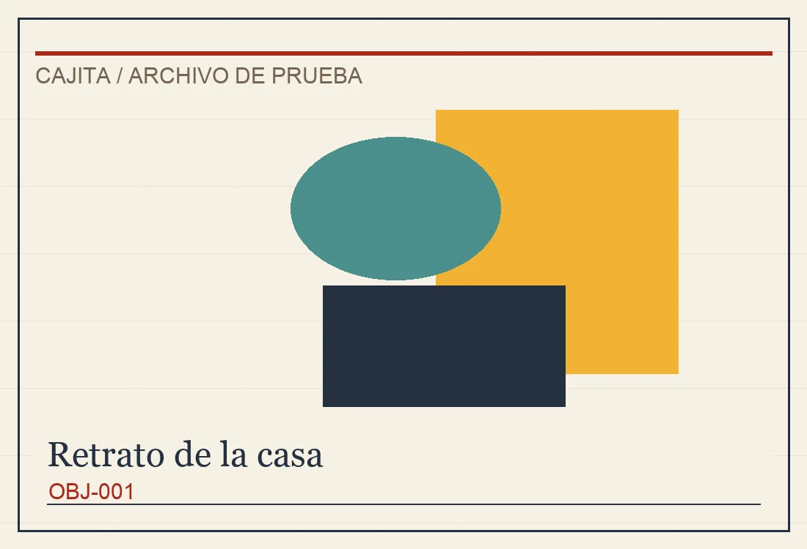
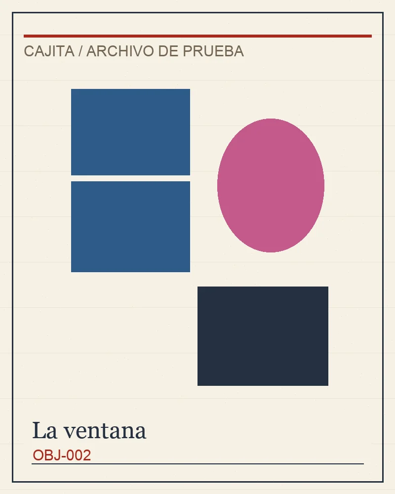
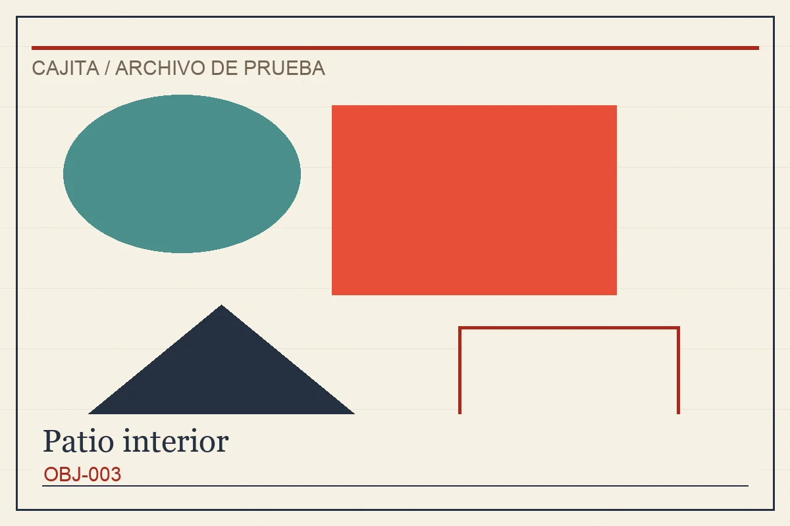
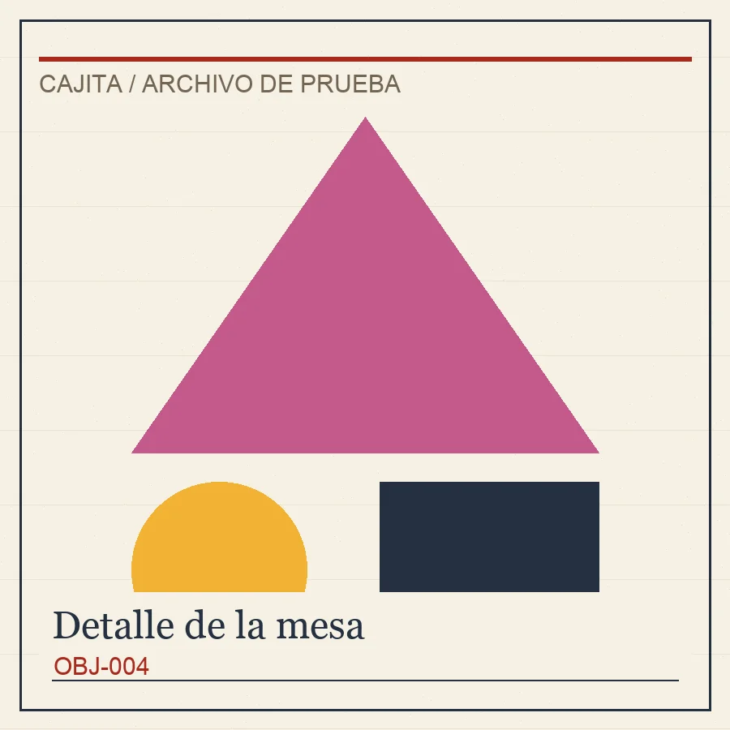

Inicio

Retrato de la casa
OBJ-001
- autor
- Ana Pérez
- anio
- 1998
- tecnica
- Óleo sobre tela
- enlace
- https://example.com/retrato



Detalle de la mesa
OBJ-004
- autor
- Colectivo Casa
- anio
- 2022
- tecnica
- Objeto encontrado
- enlace
- https://example.com/detalle
1
2
4
3